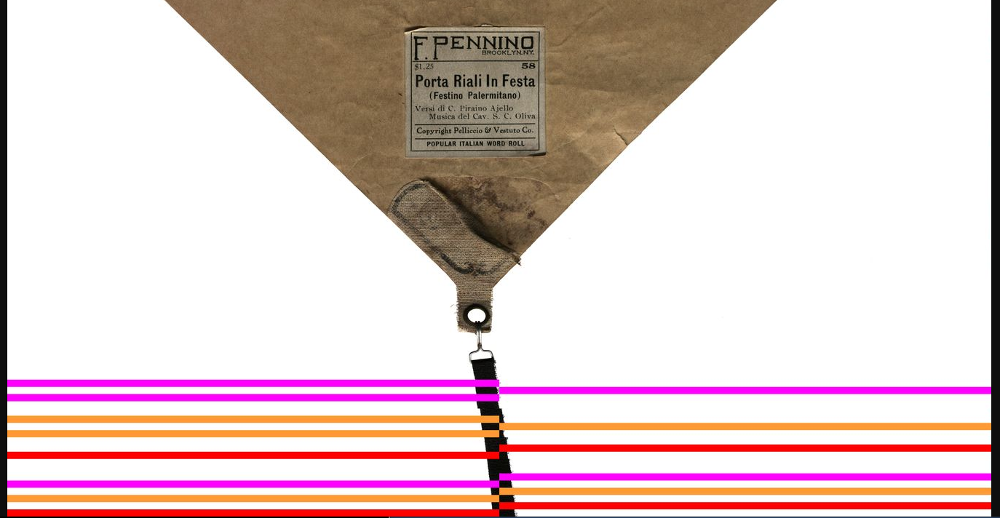

This page list scans of 23 complete piano rolls in full color at 300 dpi resolution as well as several derivative image formats. These are initial scans from the Stanford Libraries' piano-roll scanner.
Click on roll thumbnail images to view a 100-dpi (or less for longer rolls) JPEG versions of the rolls, which are 10-15 MB in size and suitable for viewing in a web-browser. The original full-color uncompressed TIFFs are about 1 GB or larger, and these are also made available as separate compressed TIFF images for each color channel (about 250 MB each). Note that the green channel of the TIFF images are scanned at 300 DPI, while the red and blue channels are scanned at 150 DPI and then interpolated to 300 DPI by the camera firmware, so in theory the green channel contains the highest resolution image of the rolls. There is also a PNG image which is a 2-color thresholded version of the roll, keeping the same size as the original image, but much smaller at less than 1 MB each..
TIFF and PNG images should be oriented in "notes" orientation, where the leader is at the top of the image, and bass notes are on the left side of the image. For rolls other than Red Welte rolls, this means that the image is reflected on a vertical axis. JPEG images are in the "visual" orientation. This places the bass notes always on the left, but the leader is placed at the bottom of the image for most rolls except Red Welte rolls.
15 out of 23 rolls contain frame-duplication errors, where pieces of the images are duplicated, over-writing frames which are missing or dropped when recording the images. Consecutive frame-duplication errors are marked in the JPEG images, but not in the TIFF or PNG images. The marks consist of a solid color covering 1/4 of the problemmatic frame. For each adjacent frame, the duplication marker shifts to the other side of the image. Here is an example from the Pennino roll where there are 10 successive duplicate frames (representing 1 physical inch on the rolls):
Most commonly there will be a burst of shorter duplciation errors at the start of a scan, such as this example from the same roll:

Three colors are cycled through to mark the frame duplications to separate separate duplcation of a different frame, so the above image contains six separate duplication events, each two to three frames in length.
Rolls are grouped by format. Click on a format in the list below to move to the rolls scanned in that format.
Go to: [ AudioGraphic | Duo-Art | Red | Green | Licensee | Ampico | Organ | Metrostyle | Test Rolls | Calibration | Other ]